1 Η Εννοια Του Διανύσματος
1.1 Ορισμός του Διανύσματος
Ορισμοί
Μονόμετρα ή Βαθμωτά Μεγέθη: Είναι τα μεγέθη τα οποία προσδιορίζονται πλήρως από το μέτρο τους και την αντίστοιχη μονάδα μέτρησης (όπως η μάζα, ο όγκος, η πυκνότητα, η θερμοκρασία).
Διανυσματικά Μεγέθη & Διάνυσμα: Διανυσματικά είναι τα μεγέθη για τον προσδιορισμό των οποίων απαιτείται, εκτός από το μέτρο και τη μονάδα μέτρησης, η διεύθυνση και η φορά τους (όπως η δύναμη, η ταχύτητα, η επιτάχυνση, η μετατόπιση).
Στη Γεωμετρία, διάνυσμα ορίζεται ως ένα προσανατολισμένο ευθύγραμμο τμήμα, δηλαδή ένα ευθύγραμμο τμήμα του οποίου τα άκρα θεωρούνται διατεταγμένα.
Το πρώτο άκρο \(A\) λέγεται αρχή (ή σημείο εφαρμογής) και το δεύτερο \(B\) λέγεται πέρας. Συμβολίζεται με \(\vec{AB}\) και παριστάνεται με ένα βέλος από το \(A\) προς το \(B\).
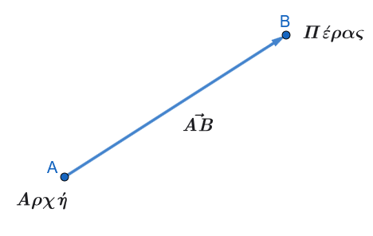
Μηδενικό Διάνυσμα: Είναι το διάνυσμα του οποίου η αρχή και το πέρας συμπίπτουν (π.χ. \(\vec{AA} = \vec{0}\)). Έχει μέτρο μηδέν και δεν έχει ορισμένη διεύθυνση ή φορά.
Μέτρο ή Μήκος Διανύσματος: Είναι η απόσταση των άκρων του, δηλαδή το μήκος του ευθύγραμμου τμήματος \(AB\), και συμβολίζεται με \(|\vec{AB}|\).
Μοναδιαίο Διάνυσμα: Ονομάζεται κάθε διάνυσμα που έχει μέτρο ίσο με τη μονάδα (\(|\vec{a}| = 1\)).
Φορέας Διανύσματος: Είναι η ευθεία πάνω στην οποία βρίσκεται ένα μη μηδενικό διάνυσμα \(\vec{AB}\). Ως φορέα του μηδενικού διανύσματος μπορούμε να θεωρήσουμε οποιαδήποτε ευθεία διέρχεται από την αρχή του.
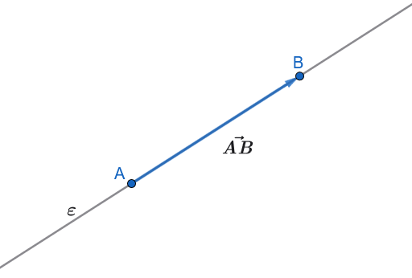
- Παράλληλα ή Συγγραμμικά Διανύσματα: Δύο μη μηδενικά διανύσματα που έχουν τον ίδιο φορέα ή παράλληλους φορείς. Στην περίπτωση αυτή λέμε ότι έχουν την ίδια διεύθυνση και γράφουμε \(\vec{AB} \parallel \vec{\Gamma\Delta}\).
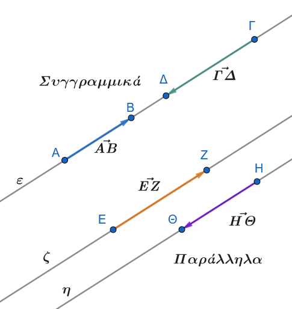
- Ομόρροπα Διανύσματα: Δύο συγγραμμικά διανύσματα \(\vec{AB}\) και \(\vec{\Gamma\Delta}\) που έχουν την ίδια φορά/κατεύθυνση (\(\vec{AB} \uparrow\uparrow \vec{\Gamma\Delta}\)). Αυτό συμβαίνει όταν:
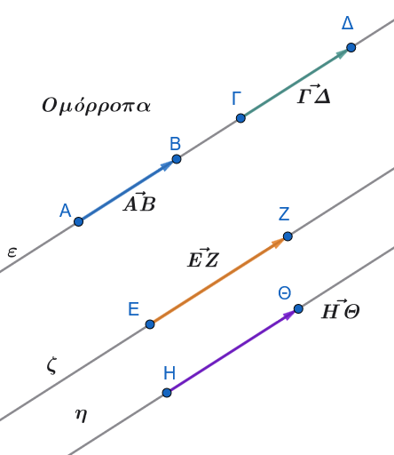
Έχουν παράλληλους φορείς και βρίσκονται στο ίδιο ημιεπίπεδο ως προς την ευθεία που ενώνει τις αρχές τους \(A\Gamma\).
Έχουν τον ίδιο φορέα και μία από τις ημιευθείες \(AB\) και \(\Gamma\Delta\) περιέχει την άλλη.
- Αντίρροπα Διανύσματα: Δύο συγγραμμικά διανύσματα που δεν είναι ομόρροπα, δηλαδή έχουν αντίθετη φορά/κατεύθυνση (\(\vec{AB} \uparrow\downarrow \vec{\Gamma\Delta}\)).
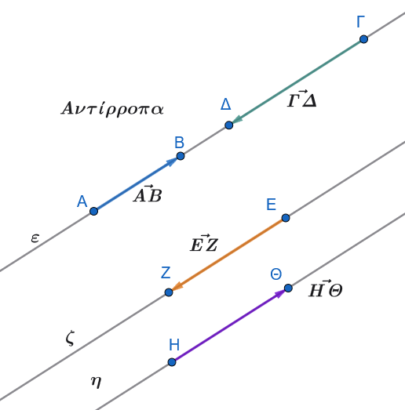
1.2 Ίσα Διανύσματα
Ορισμός:
Δύο μη μηδενικά διανύσματα λέγονται ίσα όταν έχουν την ίδια κατεύθυνση (δηλαδή ίδια διεύθυνση και ίδια φορά) και ίσα μέτρα.
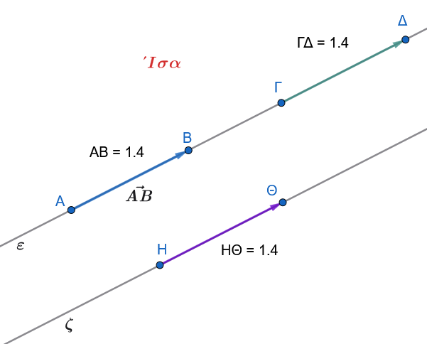
Γράφουμε \(\vec{AB} = \vec{\Gamma\Delta}\).
Τα μηδενικά διανύσματα θεωρούνται ίσα μεταξύ τους.
Γεωμετρικές Ιδιότητες:
Αν \(\vec{AB} = \vec{\Gamma\Delta}\), τότε ισχύει \(\vec{A\Gamma} = \vec{B\Delta}\), \(\vec{\Delta B} = \vec{\Gamma A}\) και \(\vec{BA} = \vec{\Delta\Gamma}\).
Αν \(M\) είναι το μέσο του ευθύγραμμου τμήματος \(AB\), τότε \(\vec{AM} = \vec{MB}\) και αντιστρόφως.
Αποδείξεις Γεωμετρικών Ιδιοτήτων
Για την απόδειξη πρέπει να χρησιμοποιήσουμε πράξεις.
Όταν στα επόμενα μαθήματα θα μάθετε τις πράξεις , επιστρέφετε εδώ να δείτε τις αποδείξεις.
Μέρος 1: Απόδειξη των ισοτήτων με υπόθεση \(\vec{AB} = \vec{\Gamma\Delta}\)
Δίνεται ότι: \[\vec{AB} = \vec{\Gamma\Delta}\]
Θεωρούμε ένα αυθαίρετο σημείο αναφοράς \(O\) (αρχή των αξόνων). Για οποιοδήποτε διάνυσμα \(\vec{XY}\), ισχύει: \[\vec{XY} = \vec{OY} - \vec{OX}\]
Επομένως, η δοσμένη σχέση γράφεται: \[\vec{OB} - \vec{OA} = \vec{O\Delta} - \vec{O\Gamma}\]
1. Απόδειξη ότι \(\vec{A\Gamma} = \vec{B\Delta}\)
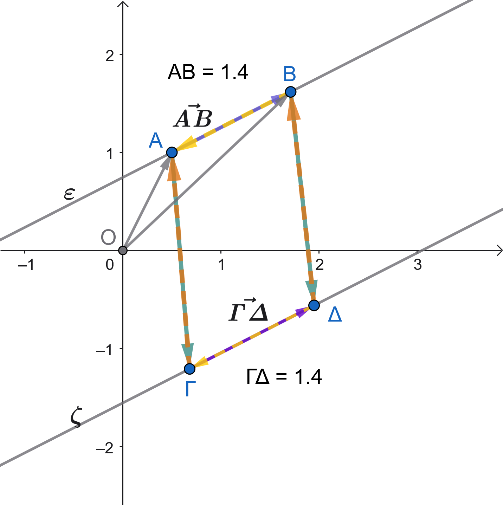
Αναδιατάσσουμε τους όρους της σχέσης: \[\vec{OB} - \vec{OA} = \vec{O\Delta} - \vec{O\Gamma}\]
Μεταφέρουμε το \(\vec{O\Gamma}\) στο αριστερό μέλος και το \(\vec{OB}\) στο δεξί μέλος: \[\vec{O\Gamma} - \vec{OA} = \vec{O\Delta} - \vec{OB}\]
Από τον ορισμό των διανυσμάτων θέσης:
\(\vec{O\Gamma} - \vec{OA} = \vec{A\Gamma}\)
\(\vec{O\Delta} - \vec{OB} = \vec{B\Delta}\)
Άρα: \[\vec{A\Gamma} = \vec{B\Delta}\]
2. Απόδειξη ότι \(\vec{\Delta B} = \vec{\Gamma A}\)
Πολλαπλασιάζουμε και τα δύο μέλη της προηγούμενης ισότητας \(\vec{A\Gamma} = \vec{B\Delta}\) με \(-1\): \[-\vec{A\Gamma} = -\vec{B\Delta}\]
Γνωρίζουμε ότι το αντίθετο ενός διανύσματος προκύπτει με αντιστροφή των άκρων του (\(-\vec{XY} = \vec{YX}\)):
\(-\vec{A\Gamma} = \vec{\Gamma A}\)
\(-\vec{B\Delta} = \vec{\Delta B}\)
Επομένως: \[\vec{\Gamma A} = \vec{\Delta B} \iff \vec{\Delta B} = \vec{\Gamma A}\]
3. Απόδειξη ότι \(\vec{BA} = \vec{\Delta\Gamma}\)
Ξεκινώντας απευθείας από την αρχική υπόθεση: \[\vec{AB} = \vec{\Gamma\Delta}\]
Πολλαπλασιάζουμε και τα δύο μέλη με \(-1\): \[-\vec{AB} = -\vec{\Gamma\Delta}\]
Επειδή \(-\vec{AB} = \vec{BA}\) και \(-\vec{\Gamma\Delta} = \vec{\Delta\Gamma}\), έχουμε άμεσα: \[\vec{BA} = \vec{\Delta\Gamma}\]
Μέρος 2: Απόδειξη ότι το \(M\) είναι μέσον του \(AB \iff \vec{AM} = \vec{MB}\)
Η πρόταση είναι ισοδυναμία («και αντιστρόφως»), οπότε αποδεικνύουμε και τις δύο κατευθύνσεις:
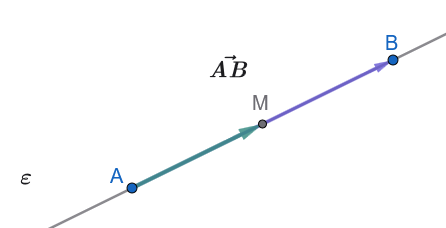
Ευθύ (\(\implies\)): Αν το \(M\) είναι μέσον του \(AB\), τότε \(\vec{AM} = \vec{MB}\)
Εφόσον το \(M\) είναι το μέσον του ευθύγραμμου τμήματος \(AB\), βρίσκεται πάνω στην ευθεία \(AB\) μεταξύ των \(A\) και \(B\). Συνεπώς, τα διανύσματα \(\vec{AM}\) και \(\vec{MB}\) έχουν την ίδια διεύθυνση (τον ίδιο φορέα).
Το διάνυσμα \(\vec{AM}\) ξεκινά από το \(A\) και κατευθύνεται προς το \(M\), ενώ το \(\vec{MB}\) ξεκινά από το \(M\) και κατευθύνεται προς το \(B\). Άρα έχουν την ίδια φορά.
Επειδή το \(M\) είναι μέσον, τα μήκη των τμημάτων είναι ίσα: \((AM) = (MB)\), δηλαδή έχουν ίσα μέτρα: \[|\vec{AM}| = |\vec{MB}|\]
Έχοντας ίδια διεύθυνση, ίδια φορά και ίσα μέτρα, τα διανύσματα είναι ίσα: \[\vec{AM} = \vec{MB}\]
Αντίστροφο (\(\impliedby\)): Αν \(\vec{AM} = \vec{MB}\), τότε το \(M\) είναι μέσον του \(AB\)
Από την ισότητα των διανυσμάτων \(\vec{AM} = \vec{MB}\), προκύπτει ότι έχουν την ίδια διεύθυνση. Επειδή έχουν κοινό σημείο το \(M\), τα σημεία \(A\), \(M\) και \(B\) είναι συνευθειακά.
Επειδή έχουν την ίδια φορά, το σημείο \(M\) βρίσκεται ανάμεσα στα σημεία \(A\) και \(B\).
Από την ισότητα των μέτρων τους: \[|\vec{AM}| = |\vec{MB}| \implies (AM) = (MB)\]
Συνεπώς, το σημείο \(M\) ισαπέχει από τα άκρα του τμήματος \(AB\) και ανήκει σε αυτό, άρα είναι το μέσον του \(AB\).
1.3 Αντίθετα Διανύσματα
Ορισμός:
Δύο διανύσματα λέγονται αντίθετα όταν έχουν αντίθετη κατεύθυνση (δηλαδή ίδια διεύθυνση και αντίθετη φορά) και ίσα μέτρα.
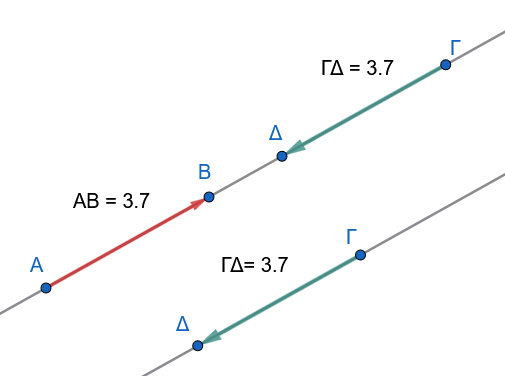
Συμβολισμός & Σχέσεις:
Γράφουμε \(\vec{AB} = -\vec{\Gamma\Delta}\) ή \(\vec{\Gamma\Delta} = -\vec{AB}\).
Ισχύει η ισοδυναμία: \(\vec{AB} = -\vec{\Gamma\Delta} \Leftrightarrow \vec{AB} = \vec{\Delta\Gamma}\).
Ειδικότερα, για τα άκρα του ίδιου τμήματος ισχύει \(\vec{BA} = -\vec{AB}\).
1.4 Γωνία δύο Διανυσμάτων
Ορισμοί:
Έστω δύο μη μηδενικά διανύσματα \(\vec{a}\) και \(\vec{\beta}\).
Με αρχή ένα τυχαίο σημείο \(O\), σχεδιάζουμε τα διανύσματα \(\vec{OA} = \vec{a}\) και \(\vec{OB} = \vec{\beta}\).
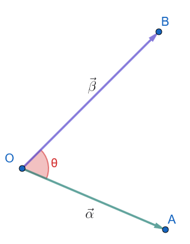
Την κυρτή γωνία \(\widehat{AOB}\) που ορίζουν οι ημιευθείες \(OA\) και \(OB\) ονομάζουμε γωνία των διανυσμάτων \(\vec{a}\) και \(\vec{\beta}\) και τη συμβολίζουμε με \((\widehat{\vec{a}, \vec{\beta}})\) ή \(\theta\).
Όρια Γωνίας: Η γωνία \(\theta\) είναι ανεξάρτητη από την επιλογή του σημείου \(O\) και ισχύει: \[0^\circ \le \theta \le 180^\circ \quad \text{ή} \quad 0 \le \theta \le \pi\]
- Αν \(\vec{a} \uparrow\uparrow \vec{\beta}\) (ομόρροπα), τότε \(\theta = 0^\circ\).
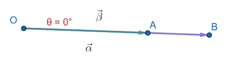
- Αν \(\vec{a} \uparrow\downarrow \vec{\beta}\) (αντίρροπα), τότε \(\theta = 180^\circ = \pi\).
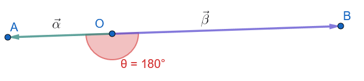
- Ορθογώνια ή Κάθετα Διανύσματα: Αν \(\theta = 90^\circ = \dfrac{\pi}{2}\), τότε τα διανύσματα \(\vec{a}\) και \(\vec{\beta}\) λέγονται ορθογώνια ή κάθετα και γράφουμε \(\vec{a} \perp \vec{\beta}\).
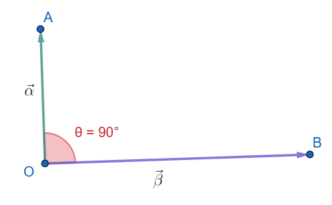
Μηδενικό Διάνυσμα: Αν ένα από τα διανύσματα είναι το μηδενικό, ως γωνία θεωρούμε οποιαδήποτε γωνία \(\theta \in [0, \pi]\).
Έτσι, το μηδενικό διάνυσμα μπορεί να θεωρηθεί ομόρροπο, αντίρροπο ή κάθετο σε κάθε άλλο διάνυσμα.
1.5 Ασκήσεις στην Έννοια του Διανύσματος
Άσκηση 1 (Χαρακτηρισμός Προτάσεων)
Να χαρακτηρίσετε τις παρακάτω προτάσεις ως Σωστές (\(\Sigma\)) ή Λανθασμένες (\(\Lambda\)):
Δύο διανύσματα με ίσα μέτρα είναι υποχρεωτικά ίσα.
Αν \(\vec{AB} = \vec{\Gamma\Delta}\), τότε τα ευθύγραμμα τμήματα \(AB\) και \(\Gamma\Delta\) έχουν ίσα μήκη.
Το μηδενικό διάνυσμα έχει ορισμένη διεύθυνση και φορά.
Αν δύο διανύσματα είναι αντίθετα, τότε έχουν τους ίδιους ή παράλληλους φορείς.
Αν \((\widehat{\vec{a}, \vec{\beta}}) = 0^\circ\), τότε τα διανύσματα \(\vec{a}\) και \(\vec{\beta}\) είναι αντίρροπα.
Άσκηση 2 (Διανύσματα σε Παραλληλόγραμμο)
Δίνεται παραλληλόγραμμο \(AB\Gamma\Delta\) με κέντρο (σημείο τομής των διαγωνίων) το \(O\).
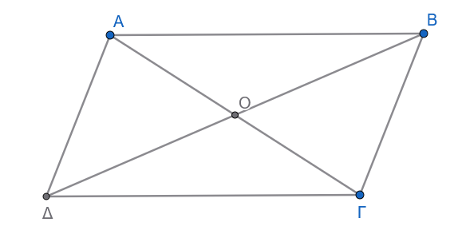
Να γράψετε όλα τα ζεύγη ίσων διανυσμάτων που σχηματίζονται από τις πλευρές του παραλληλογράμμου.
Να βρείτε το αντίθετο διάνυσμα του \(\vec{AO}\) με αρχή το σημείο \(C\) (\(\Gamma\)).
Ποιο διάνυσμα είναι ίσο με το \(\vec{BO}\);
Άσκηση 3 (Έννοια Μέσου Τμήματος)
Έστω ευθύγραμμο τμήμα \(AB\) και \(M\) το μέσο του.
Να εξετάσετε αν ισχύουν οι ισότητες: \[\text{α) } \vec{AM} = \vec{MB}, \quad \text{β) } \vec{AM} = \vec{MA}, \quad \text{γ) } |\vec{AM}| = |\vec{MB}|, \quad \text{δ) } \vec{AB} = -\vec{BA}\]
Ποια είναι η σχετική θέση και η φορά των διανυσμάτων \(\vec{MA}\) και \(\vec{MB}\);
Άσκηση 4 (Διανύσματα σε Ρόμβο)
Δίνεται ρόμβος \(AB\Gamma\Delta\).
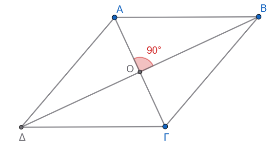
Είναι τα διανύσματα \(\vec{AB}\) και \(\vec{B\Gamma}\) ίσα; Να αιτιολογήσετε την απάντησή σας.
Ποια είναι η γωνία των διανυσμάτων \(\vec{A\Gamma}\) και \(\vec{B\Delta}\);
Υπάρχουν ίσα διανύσματα τα οποία έχουν αρχή ή πέρας το σημείο τομής των διαγωνίων Ο.
Άσκηση 5 (Διανύσματα σε Κανονικό Εξάγωνο)
Δίνεται κανονικό εξάγωνο \(AB\Gamma\Delta EZ\) με κέντρο \(O\).
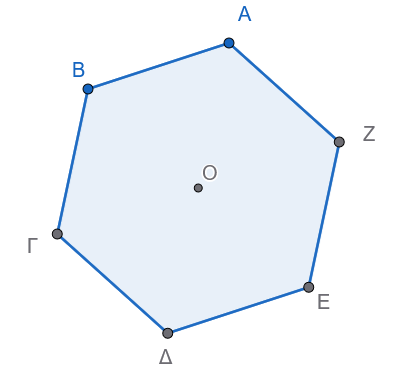
Να βρείτε όλα τα διανύσματα που έχουν αρχή και πέρας κορυφές του εξαγώνου ή το \(O\) και είναι:
α) ίσα με το \(\vec{AB}\),
β) αντίθετα του \(\vec{B\Gamma}\),
γ) ομόρροπα με το \(\vec{AO}\).
Άσκηση 6 (Συγγραμμικότητα & Μεταβατικότητα)
Έστω τρία μη μηδενικά διανύσματα \(\vec{a}, \vec{\beta}, \vec{\gamma}\).
Αν \(\vec{a} \parallel \vec{\beta}\) και \(\vec{\beta} \parallel \vec{\gamma}\), τι συμπεραίνετε για τη διεύθυνση των \(\vec{a}\) και \(\vec{\gamma}\);
Αν \(\vec{a} \uparrow\uparrow \vec{\beta}\) και \(\vec{\beta} \uparrow\downarrow \vec{\gamma}\), ποια είναι η σχέση κατεύθυνσης μεταξύ \(\vec{a}\) και \(\vec{\gamma}\);
Άσκηση 7 (Γεωμετρικός Σχηματισμός Ισότητας)
Δίνονται τέσσερα σημεία \(A, B, \Gamma, \Delta\).
Αν \(\vec{AB} = \vec{\Gamma\Delta}\) και τα σημεία \(A, B, \Gamma, \Delta\) δεν είναι συνευθειακά, τι είδος τετραπλεύρου είναι το \(AB\Delta\Gamma\);
Τι συμβαίνει με τα τμήματα \(A\Gamma\) και \(B\Delta\) (ποια είναι η σχέση μεταξύ τους);
Άσκηση 8 (Γωνία Διανυσμάτων σε Ισόπλευρο Τρίγωνο)
Δίνεται ισόπλευρο τρίγωνο \(AB\Gamma\).
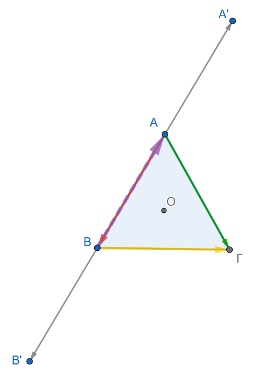
- Να υπολογίσετε τη γωνία των διανυσμάτων: \[\text{α) } (\widehat{\vec{AB}, \vec{A\Gamma}}), \quad \text{β) } (\widehat{\vec{AB}, \vec{B\Gamma}}), \quad \text{γ) } (\widehat{\vec{BA}, \vec{A\Gamma}})\]
Άσκηση 9 (Γωνία Διανυσμάτων σε Τετράγωνο)
Δίνεται τετράγωνο \(AB\Gamma\Delta\) με κέντρο \(O\). Να βρεθούν οι γωνίες:
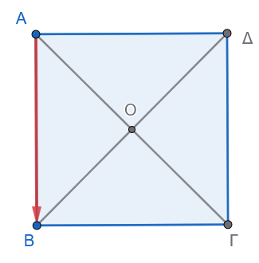
\((\widehat{\vec{AB}, \vec{A\Delta}})\)
\((\widehat{\vec{OA}, \vec{O\Gamma}})\)
\((\widehat{\vec{OA}, \vec{OB}})\)
\((\widehat{\vec{AB}, \vec{\Delta\Gamma}})\)
Άσκηση 10 (Αναγνώριση Κατεύθυνσης και Μέτρου)
Δίνονται τα διανύσματα \(\vec{a}\) και \(\vec{\beta}\) με \(|\vec{a}| = 5\) και \(|\vec{\beta}| = 5\).
Συνεπάγεται κατ’ ανάγκη ότι \(\vec{a} = \vec{\beta}\);
Αν επιπλέον δοθεί ότι \(\vec{a} \parallel \vec{\beta}\), ποιες είναι οι δυνατές τιμές για τη γωνία \((\widehat{\vec{a}, \vec{\beta}})\);
Σε ποια περίπτωση θα ισχύει \(\vec{a} = -\vec{\beta}\);
2 Φύλλο Εργασίας: Εισαγωγή στα Διανύσματα & Γεωμετρικές Ιδιότητες
Μάθημα: Μαθηματικά Β’ Λυκείου (Προσανατολισμού Θετικών Σπουδών)
Θεματική Ενότητα: 1.1 Έννοια του Διανύσματος - Ίσα & Αντίθετα Διανύσματα - Γωνία Διανυσμάτων
2.1 Θέμα Α: Ερωτήσεις Θεωρίας & Αντικειμενικού Τύπου
2.1.1 Α1. Ερωτήσεις Σωστού / Λάθους
Να χαρακτηρίσετε τις παρακάτω προτάσεις ως Σωστή (Σ) ή Λανθασμένη (Λ):
Δύο διανύσματα που έχουν ίσα μέτρα είναι πάντα ίσα.
Αν \(\vec{AB} = \vec{\Gamma\Delta}\), τότε \(A\Gamma = B\Delta\).
Το μηδενικό διάνυσμα είναι κάθετο σε κάθε άλλο διάνυσμα.
Δύο αντίθετα διανύσματα έχουν υποχρεωτικά παράλληλους ή ίδιους φορείς.
Αν η γωνία δύο διανυσμάτων \(\vec{a}\) και \(\vec{b}\) είναι \(180^\circ\), τότε τα διανύσματα είναι ομόρροπα.
Για οποιοδήποτε ευθύγραμμο τμήμα \(AB\) ισχύει \(\vec{BA} = -\vec{AB}\).
Αν δύο διανύσματα είναι παράλληλα, έχουν υποχρεωτικά την ίδια φορά.
2.1.2 Α2. Ερωτήσεις Πολλαπλής Επιλογής
- Δίνεται παραλληλόγραμμο \(AB\Gamma\Delta\) με κέντρο \(O\). Ποιο από τα παρακάτω διανύσματα είναι ίσο με το \(\vec{AO}\);
α) \(\vec{O\Gamma}\)
β) \(\vec{\Gamma O}\)
γ) \(\vec{BO}\)
δ) \(\vec{O\Delta}\)
- Αν για δύο μη μηδενικά διανύσματα \(\vec{a}, \vec{b}\) ισχύει \(\vec{a} = -\vec{b}\), τότε η γωνία τους \((\widehat{\vec{a}, \vec{b}})\) είναι ίση με:
α) \(0^\circ\)
β) \(45^\circ\)
γ) \(90^\circ\)
δ) \(180^\circ\)
2.2 Θέμα Β: Ασκήσεις Κατανόησης & Γεωμετρικών Σχηματισμών
2.2.1 Άσκηση Β1 (Διανύσματα σε Παραλληλόγραμμο)
Δίνεται παραλληλόγραμμο \(AB\Gamma\Delta\) με κέντρο (σημείο τομής των διαγωνίων) το \(O\).
Να καταγράψετε όλα τα ζεύγη ίσων διανυσμάτων που σχηματίζονται από τις πλευρές του παραλληλογράμμου.
Να βρείτε τα αντίθετα διανύσματα των \(\vec{AB}\), \(\vec{AO}\) και \(\vec{O\Delta}\).
Να δικαιολογήσετε γιατί \(\vec{AB} = \vec{\Delta\Gamma}\) ενώ \(\vec{AB} \neq \vec{\Gamma\Delta}\).
2.3 Άσκηση Β2 (Διανύσματα σε Κανονικό Εξάγωνο)
Έστω κανονικό εξάγωνο \(AB\Gamma\Delta EZ\) με κέντρο \(O\).
Να βρείτε όλα τα διανύσματα με αρχή και πέρας τις κορυφές του εξαγώνου ή το κέντρο \(O\) που είναι ίσα με το διάνυσμα \(\vec{AB}\).
Να βρείτε όλα τα διανύσματα που είναι αντίθετα του \(\vec{B\Gamma}\).
Ποια είναι η γωνία των διανυσμάτων \((\widehat{\vec{OA}, \vec{OB}})\) και \((\widehat{\vec{OA}, \vec{O\Delta}})\);
2.3.1 Άσκηση Β3 (Διανύσματα σε Ρόμβο & Τετράγωνο)
Δίνεται ρόμβος \(AB\Gamma\Delta\). Εξετάστε αν ισχύει \(\vec{AB} = \vec{B\Gamma}\) και αιτιολογήστε την απάντησή σας.
Αν το \(AB\Gamma\Delta\) είναι τετράγωνο με κέντρο \(O\), υπολογίστε τις γωνίες:
α) \((\widehat{\vec{AB}, \vec{A\Delta}})\)
β) \((\widehat{\vec{OA}, \vec{O\Gamma}})\)
γ) \((\widehat{\vec{OA}, \vec{OB}})\)
2.4 Θέμα Γ: Σύνθετες Ασκήσεις & Γεωμετρικές Αποδείξεις
2.4.1 Άσκηση Γ1 (Κατασκευή & Ισότητα Διανυσμάτων)
Δίνεται τρίγωνο \(AB\Gamma\) και \(M\) το μέσο της πλευράς \(A\Gamma\). Θεωρούμε τα σημεία \(\Delta\) και \(E\) τέτοια ώστε \(\vec{M\Delta} = \vec{\Gamma B}\) και \(\vec{ME} = \vec{BA}\).
Να σχεδιάσετε το αντίστοιχο γεωμετρικό σχήμα.
Να αποδείξετε ότι το σημείο \(A\) είναι το μέσο του ευθύγραμμου τμήματος \(\Delta E\).
2.4.2 Άσκηση Γ2 (Γωνίες σε Ισόπλευρο Τρίγωνο)
Δίνεται ισόπλευρο τρίγωνο \(AB\Gamma\).
- Να υπολογίσετε τις γωνίες των διανυσμάτων:
α) \((\widehat{\vec{AB}, \vec{A\Gamma}})\)
β) \((\widehat{\vec{AB}, \vec{B\Gamma}})\)
γ) \((\widehat{\vec{BA}, \vec{A\Gamma}})\)
2.5 Αναλυτικές Απαντήσεις & Λύσεις
2.5.1 Απαντήσεις Θέματος Α
Α1:
Λάθος (Πρέπει να έχουν και την ίδια κατεύθυνση).
Σωστό (Από την ιδιότητα του παραλληλογράμμου \(AB\Delta\Gamma\)).
Σωστό (Σύμφωνα με τον ορισμό, το μηδενικό διάνυσμα θεωρείται κάθετο σε κάθε διάνυσμα).
Σωστό (Αφού έχουν αντίθετη φορά, είναι συγγραμμικά).
Λάθος (Όταν η γωνία είναι \(180^\circ\), τα διανύσματα είναι αντίρροπα).
Σωστό (Έχουν ίδιο μέτρο, ίδια διεύθυνση και αντίθετη φορά).
Λάθος (Μπορεί να είναι και αντίρροπα).
Α2:
α) \(\vec{O\Gamma}\) (Διότι το \(O\) είναι μέσο της διαγωνίου \(A\Gamma\)).
δ) \(180^\circ\) (Τα αντίθετα διανύσματα έχουν αντίθετη φορά).
2.5.2 Λύσεις Θέματος Β
Άσκηση Β1:
Ίσα ζεύγη πλευρών: \[\vec{AB} = \vec{\Delta\Gamma}, \quad \vec{BA} = \vec{\Gamma\Delta}, \quad \vec{A\Delta} = \vec{B\Gamma}, \quad \vec{\Delta A} = \vec{\Gamma B}\]
Αντίθετα:
\(-\vec{AB} = \vec{BA} = \vec{\Gamma\Delta}\)
\(-\vec{AO} = \vec{OA} = \vec{O\Gamma}\)
\(-\vec{O\Delta} = \vec{\Delta O} = \vec{OB}\)
- Το \(\vec{AB}\) είναι ίσο με το \(\vec{\Delta\Gamma}\) διότι έχουν την ίδια φορά (από αριστερά προς τα δεξιά στη βάση).
Το \(\vec{\Gamma\Delta}\) έχει την αντίθετη φορά, οπότε \(\vec{AB} = -\vec{\Gamma\Delta}\).
Άσκηση Β2:
Ίσα με το \(\vec{AB} \quad\): \(\vec{EO}\), \(\vec{O\Delta}\), \(\vec{Z\Gamma}\).
Αντίθετα του \(\vec{B\Gamma} \quad\): \(\vec{\Gamma B}\), \(\vec{E Z}\), \(\vec{O A}\), \(\vec{\Delta O}\).
Γωνίες:
\((\widehat{\vec{OA}, \vec{OB}}) = 60^\circ\) (αφού τα τρίγωνα του κανονικού εξαγώνου είναι ισόπλευρα).
\((\widehat{\vec{OA}, \vec{O\Delta}}) = 180^\circ\) (αφού \(A, O, \Delta\) είναι συνευθειακά και τα διανύσματα αντίρροπα).
Άσκηση Β3:
Στον ρόμβο ισχύει \((AB) = (B\Gamma)\) (ίσα μέτρα), αλλά οι φορείς \(AB\) και \(B\Gamma\) τέμνονται στη κορυφή \(B\), άρα δεν είναι παράλληλοι. Συνεπώς \(\vec{AB} \neq \vec{B\Gamma}\).
Στο τετράγωνο:
α) \((\widehat{\vec{AB}, \vec{A\Delta}}) = 90^\circ\) (ορθή γωνία τετραγώνου).
β) \((\widehat{\vec{OA}, \vec{O\Gamma}}) = 180^\circ\) (αντίρροπα διανύσματα στη διαγώνιο).
γ) \((\widehat{\vec{OA}, \vec{OB}}) = 90^\circ\) (οι διαγώνιοι τετραγώνου τέμνονται κάθετα).
2.5.3 Λύσεις Θέματος Γ
Άσκηση Γ1:
- Απόδειξη:
Από την υπόθεση έχουμε \(\vec{M\Delta} = \vec{\Gamma B} \quad\) (1) και \(\vec{ME} = \vec{BA} \quad\) (2).
Επειδή το \(M\) είναι μέσο του \(A\Gamma\), ισχύει \(\vec{AM} = \vec{M\Gamma} \quad\) (3).
Από τη σχέση (1), επειδή \(\vec{M\Delta} = \vec{\Gamma B}\), το τετράπλευρο \(M\Delta B\Gamma\) είναι παραλληλόγραμμο, άρα: \[\vec{M\Gamma} = \vec{\Delta B}\]
Από τη σχέση (3) προκύπτει ότι \(\vec{AM} = \vec{\Delta B}\), οπότε το τετράπλευρο \(AMB\Delta\) είναι παραλληλόγραμμο.
Συνεπώς: \[\vec{\Delta A} = \vec{BM} \quad (4)\]
Όμοια, από τη σχέση (2) \(\vec{ME} = \vec{BA}\), το τετράπλευρο \(AEBM\) είναι παραλληλόγραμμο, οπότε: \[\vec{AE} = \vec{MB} \quad (5)\]
Επειδή \(\vec{BM} = -\vec{MB}\), από τις (4) και (5) προκύπτει ότι: \[\vec{\Delta A} = \vec{AE}\]
Άρα, τα διανύσματα \(\vec{\Delta A}\) και \(\vec{AE}\) είναι ίσα, πράγμα που σημαίνει ότι τα σημεία \(\Delta, A, E\) είναι συνευθειακά και \((\Delta A) = (AE)\).
Επομένως, το \(A\) είναι το μέσο του ευθύγραμμου τμήματος \(\Delta E\).
Άσκηση Γ2:
α) \((\widehat{\vec{AB}, \vec{A\Gamma}}) = 60^\circ\) (εσωτερική γωνία ισόπλευρου τριγώνου με κοινή αρχή το \(A\)).
β) Για τη γωνία \((\widehat{\vec{AB}, \vec{B\Gamma}})\), μεταφέρουμε το \(\vec{AB}\) ώστε να έχει κοινή αρχή με το \(\vec{B\Gamma}\) το σημείο \(B\) (προέκταση της \(AB\)). Η σχηματιζόμενη γωνία είναι παραπληρωματική της εσωτερικής γωνίας του τριγώνου: \[180^\circ - 60^\circ = 120^\circ\]
γ) \((\widehat{\vec{BA}, \vec{A\Gamma}})\): Το \(\vec{BA}\) έχει πέρας το \(A\) και το \(\vec{A\Gamma}\) αρχή το \(A\). Μεταφέροντας το \(\vec{BA}\) στην προέκτασή του πέραν του \(A\), η γωνία είναι: \[180^\circ - 60^\circ = 120^\circ\]
Εύχομαι
ΚΑΛΗ ΜΕΛΕΤΗ!